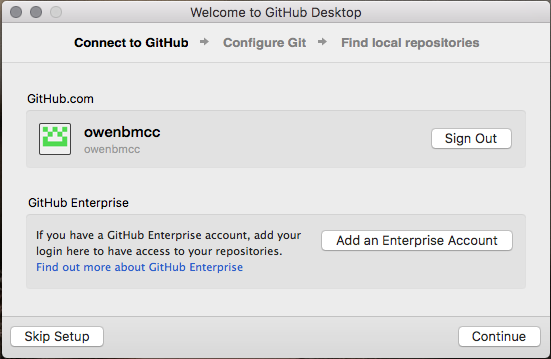
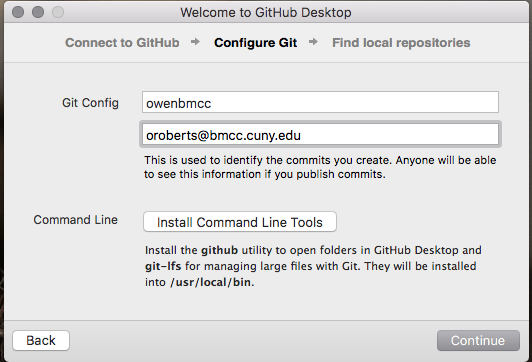

Today we will look into using the GitHub Desktop client to learn the basics of git and Github.
Download the GitHub Desktop Client here.
The lab computers may have an older version that looks a bit different but they have most of the same functionality.
Follow the steps to login to your account:


Once logged in, you can clone your 210 homework from your account.

Once you have cloned the repo, you need to choose a root folder. I suggest adding something to your Desktop.

The GitHub client will sync the changes for you.

Make sure whenever you make changes on your files to press the sync button. If you edit your files from another computer, you have to sync those files to the classroom computer before editing them.
If you are ever signed out, you can log back in back going to GitHub Desktop > Preferences > Accounts and sign in again.
You can also open preferences with the key command: C,